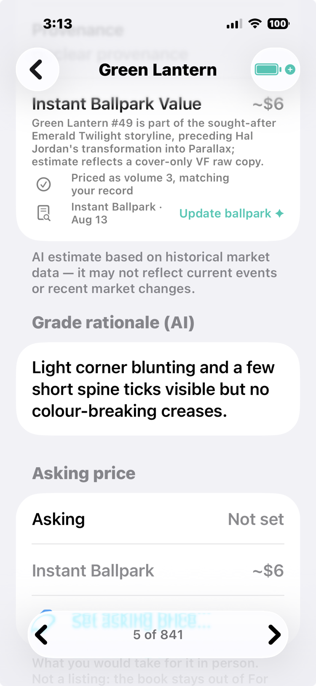

Frequently asked questions
The short answers. The How To guides carry the long ones.
How many comics can it handle?
A million comics in inventory? We haven't found the limit yet. What we have done is test a 50,000-book collection on older iPhone hardware: it works great, and it takes a little under 8 GB. An 841-book collection on a newer iPhone measures 262 MB, so an everyday collection barely registers. The big measurement doubles as your sizing guide: roughly 1 GB per 6,000 books, so you can work out the space any collection needs before you scan a single cover. The app has no built-in cap: your phone's storage is the real ceiling, so newer hardware and larger storage is how you get to the millions. It's built and used daily by a collector with thousands of books of his own. The arithmetic behind it is on the home page: tiny records, smartly sized photos.
Does the app see my collection?
No. Your collection lives on your phone, and it is not synced to any server of ours. When you ask for AI analysis, the app sends what that one request needs (a photo and your comments), the backend produces the answer, returns it, and does not keep your photograph. Your inventory as a whole is never uploaded, and we could not browse it if we wanted to. There are no analytics and no advertising in the app, either. The full accounting of what moves and what stays is the privacy policy, which is short enough to actually read.
Do I need an account?
No. There is no sign-up, no login, no password, and no profile: your device is your identity. The app proves to our servers that it is a real install (that is what keeps strangers from running up our AI bill), and your credits belong to that install. Nothing to breach, no password to forget. The honest flip side: your phone holds the only copy of your collection, so make backups; the backup guide shows how easy the whole-device zip is.
What do credits cost?

Tap the battery in the app and the Credits screen lays the whole system out. Everyone gets a free weekly allowance that recharges every week: it covers casual collecting, and it does not carry over. Credits you purchase never expire. Packs start at $4.99, the bigger packs carry bonus credits, and the screen shows the per-credit price plainly so you can see exactly what the bulk discount is worth.
The same screen keeps you from ever being surprised. Actions that use credits are marked with a spark, so you know before you tap, and its activity list shows what you have spent credits on. Most of the app costs nothing at all; the credits guide has the full free-versus-paid rundown.
How accurate is the grading?
It depends on what you ask for, and the app is honest about the difference. An ordinary scan is a simple cover inspection: great for identifying the book, not very accurate as a grade, and the app treats it that way.
For your more valuable books there's Advanced Grading. It walks a 16-point checklist (spine, corners, edges, gloss, pages, staples, and more) across multiple high-resolution photographs: front cover, back cover, interior pages, the spine, staples, and any areas of damage. Its confidence is tied to what it could actually see, so a grade never claims more certainty than the photos support.
Too Many Comics will not replace a professional grading service, and doesn't pretend to. What it does is help you decide, quickly and cheaply, which books are worth sending to one.
Are the price estimates live market prices?

No, and the app says so out loud. AI estimates are based on historical market data and may not reflect current events, so every price carries its "last updated" date and that standing disclaimer. Treat them as ballparks: they're excellent at telling you which books in a stack seem valuable and deserve a closer look. Then use your own expertise and other tools to set your actual asking prices.
The app helps you do exactly that. The Admin View and the Auction view are both built to run on a Mac or PC, so you can quickly research pricing with a big screen and a real browser, update your asking prices, and sync the changes back to your inventory. And Hot Books watches the comic news daily and matches it to the books you own, so when an announcement moves a book you have, you hear about it.
Can I trust the grades on a book someone shares with me?
Trust them the way you would trust the sender across a table. A shared collection arrives exactly as the sender recorded it, and the app quarantines it under Friends and Clients, plainly labeled as theirs. Share files are sealed against editing (a file modified after export refuses to import), but a seal proves the app wrote the file, not that the records inside are true: a grade, an AI assessment, or a price in a share is still the sender's word, exactly as it would be out loud at a show.
So the app keeps authorship visible, and gives you the choice up front. Every grade on a shared book carries a Grader line reading “per the sender,” and the import itself asks how far you trust them: keep everything, clear just their pricing (free, and their grades stay marked as theirs), or clear pricing and grades both, with your own AI re-scanning each cover. Their asking prices survive whatever you choose; that's their offer, and what you negotiate against. When money is on the table, do what the hobby has always done: check the book yourself. Evaluate a Stack and Advanced Grading spend your credits on your photos and answer to you, and nobody can hand you a pre-faked copy of your own assessment.